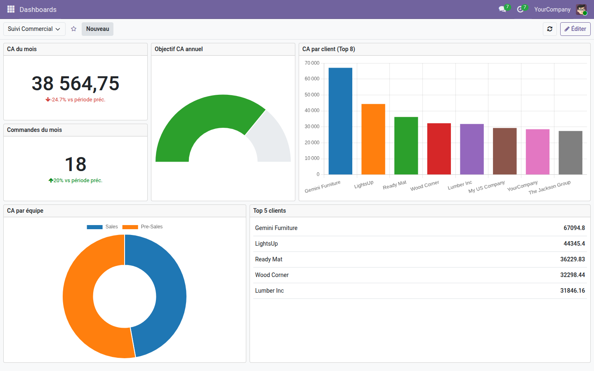
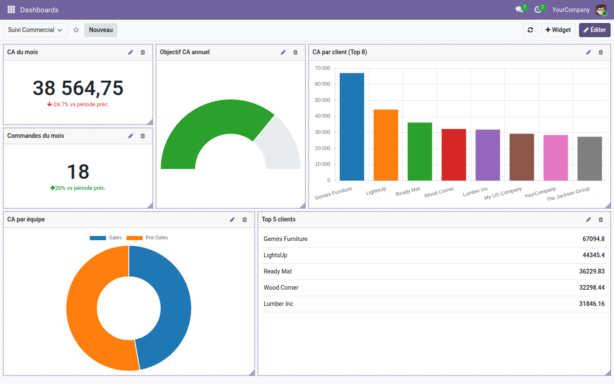
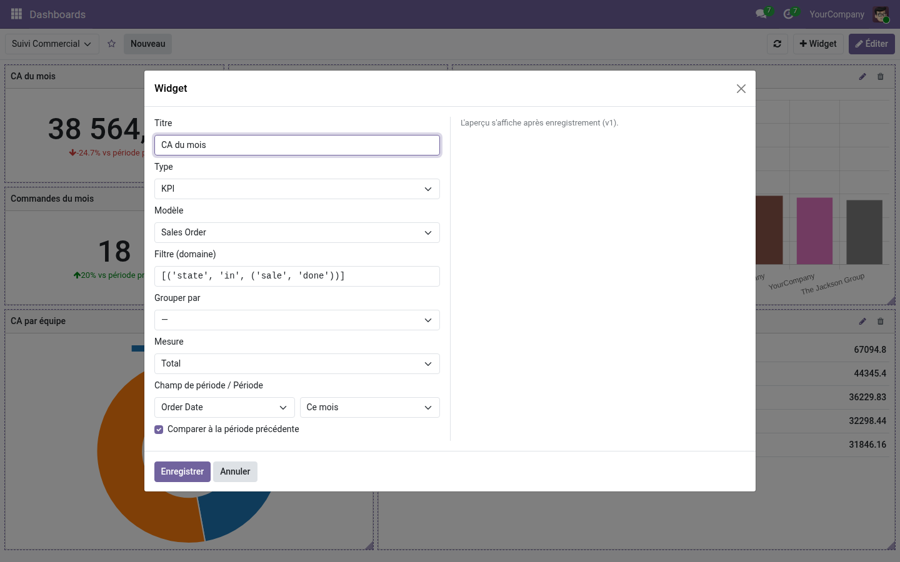

OSKI Dashboard — constructeur de tableaux de bord
Composez vos propres tableaux de bord Odoo par glisser-déposer : KPI, graphiques, listes et jauges alimentés en direct — avec les droits de l'utilisateur qui regarde, jamais en admin.
Odoo Community n'offre aucun tableau de bord personnalisable : les chiffres qui comptent sont éparpillés entre les vues liste, les pivots et les exports Excel refaits chaque lundi. Pour suivre un CA mensuel, un pipeline ou un top clients d'un seul coup d'œil, il faut soit passer à Enterprise, soit développer. Ce module apporte le constructeur qui manque — sans écrire une ligne de code.
Ce que ça apporte
- 🧩 Builder drag-and-drop — placez, redimensionnez et réorganisez vos widgets sur une grille de 12 colonnes, directement à l'écran ; la disposition est sauvegardée par tableau de bord.
- 📊 9 types de widgets — KPI chiffré, barres, lignes, aires, camembert, donut, liste Top N, jauge avec objectif et bloc texte, rendus avec Chart.js.
- 📅 Périodes calendaires + comparaison N-1 — aujourd'hui, cette semaine, ce mois, ce trimestre, cette année, 7/30/90 derniers jours, 12 derniers mois… et un delta % automatique vs la période précédente sur les KPI.
- 🔁 Multi-dashboards, favoris et auto-refresh — autant de tableaux de bord que de besoins, marquage en favori par utilisateur, re-lecture automatique toutes les N secondes si vous le souhaitez.
- ⚙️ N'importe quel modèle Odoo — chaque widget vise un modèle, un filtre (domaine), un « grouper par » (granularité jour → année), une mesure (somme, moyenne, min, max ou comptage) et un Top N.
- 🔒 Sécurité réelle, pas cosmétique — chaque widget lit ses données avec les droits d'accès de l'utilisateur connecté (jamais en admin) ; règles d'enregistrement propriétaire / partage en lecture par groupes, et un rôle « Responsable Dashboards » qui voit tout.
En images
1. Un tableau de bord ventes, composé sans code
KPI avec comparaison à la période précédente, jauge d'objectif annuel, top clients en barres et en liste, répartition par équipe : tout est lu en direct dans vos données.

2. Le mode édition : glisser, redimensionner, ajouter
Un clic sur « Éditer » et chaque widget devient déplaçable et redimensionnable par sa poignée ; le bouton « + Widget » ajoute un bloc au tableau.

3. Configurer un widget en quelques listes déroulantes
Titre, type, modèle, filtre, groupement, mesure, période et comparaison N-1 : l'éditeur tient dans une fenêtre — pas de SQL, pas de vue XML.

Pourquoi l'adopter
- Des tableaux de bord personnalisables en Community — le genre de confort réservé d'habitude à Enterprise ou à un outil BI externe.
- Gratuit, sans service tiers ni clé API : tout tourne dans votre Odoo.
- Conçu pour être partagé sereinement : ce que voit un utilisateur dans un widget est exactement ce que ses droits Odoo l'autorisent à voir.
Fait partie de la suite Dashboards
Complétez avec OSKI Dashboard Pro (entonnoir, radar, heatmap, pivot, carte, filtres croisés, drill-down, mode TV — 49 €) et OSKI Dashboard Gantt (widget planning Gantt — 19 €). Voir la suite complète sur apps.odooskills.com.
Licence LGPL-3 — compatible Odoo 19.0. Support : apps@odooskills.com.